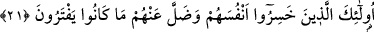
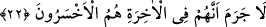
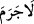

geçmektedir.
Bu iftiracıların sadece duymaya dayalı bir delil olan Kur’an’ı anlayamamaları,
görmeye dayalı diğer delilleri kabul etmemelerinden daha çirkin bir durum olduğu için
birincisinin “işitmeye tahammülleri bulunmadığı” ifade edilirken onların buna güç
yetiremedikleri belirtilmekte, ikinci özelliklerinin bulunmadığı söylenirken (sadece)
göremediklerinin belirtilmesiyle yetinilmektedir.
21. İşte onlar kendilerini ziyana sokan kimselerdir. Uydurmakta oldukları şeyler
de kendilerinden kaybolup gitti.
“İşte onlar” Allah’a kulluk etme karşılığında kendi tanrılarına tapınmayı satın alarak
“kendilerini ziyana sokan kimselerdir.” el-Bahr’da belirtildiğine göre “İşte onlar
kendilerinin rahatını veya mutluluğunu ziyâna sokan kimselerdir.” demektir. Aksi
takdirde nefsleri/kendileri zâten dâimî bir azap içerisindedir.
Herhalde (bu yorumu yapmadan) “kendilerini” kelimesini olduğu gibi bırakmak,
burada anlatılmak istenene daha uygundur. Dâimî bir azab içerisinde kalmak, sanki bâkî
kalmamak gibidir. Çünkü bâki kalmaktan maksad ondan faydalanmaktır.
Tanrılarının gerçekten tanrı olduğu ve Allah katında şefaat edeceği gibi “uydurmakta
oldukları şeyler de kendilerinden kaybolup gitti” bâtıl ve zâyi oldu.
22. Şüphesiz onlar âhirette en çok ziyâna uğrayanlardır.
“Şüphesiz onlar âhirette en çok ziyâna uğrayanlardır.”
“” kelimesi hakkında üç görüş vardır:
1- “Lâ” harfi kendisinden öncesi için olumsuzluk ifâde eder. “Cerame” ise hak ve
sâbit oldu mânâsında bir fiildir. Ondan sonrası ise onun fâili/öznesidir. Buna göre mânâ
şöyledir: Bu fiil kendilerine fayda vermez. Yani, şüphesiz onların âhirette en çok ziyâna
uğrayanlar olduğu hak ve sâbit oldu.” Bu, Sîbeveyh’in görüşüdür.
2- “Cerame” lâfzı kazandı mânâsındadır. Kendisinden sonrası mef’ûlüdür. Fâili ise
kelâmın delâlet ettiği husustur. Yâni bu, kendilerine ziyânı kazandırdı demektir. O zaman
mânâ şöyle olur: “Bundan sadece ziyân ettiklerinin ortaya çıkması durumu hasıl oldu.”
3- “Lâ cerame”=“lâ büdde” “âhirette daha da ziyan etmeleri mutlaka
gerçekleşecektir” mânâsındadır. Yani mutlaka onlar âhirette en çok ziyâna uğrayanlardır
demektir.